吃花蓮炸彈蔥油餅，最搭的好麻吉就是冰涼的紅茶啦！
連續兩天都嗑了炸彈，超滿足！
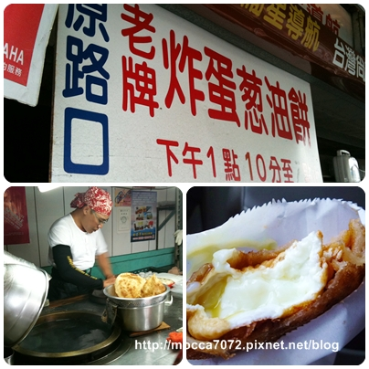
第一天由我們帶路，買的是廟口古早味紅茶，據說很多花蓮人都喝這味長大的
不過店內不只賣紅茶，是24小時的早餐店，什嘛都賣超雜！
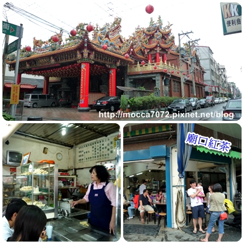
廟口以傳統方式泡製的紅茶，然後存放在二樓，以特殊的鋼管設計從二樓接到一樓
當有客人要點紅茶時，直接在一樓用水龍頭打開後盛
所以喝起來有股特殊味道，管子沒洗!? (大誤)，反正就自認為這就是真正古早味
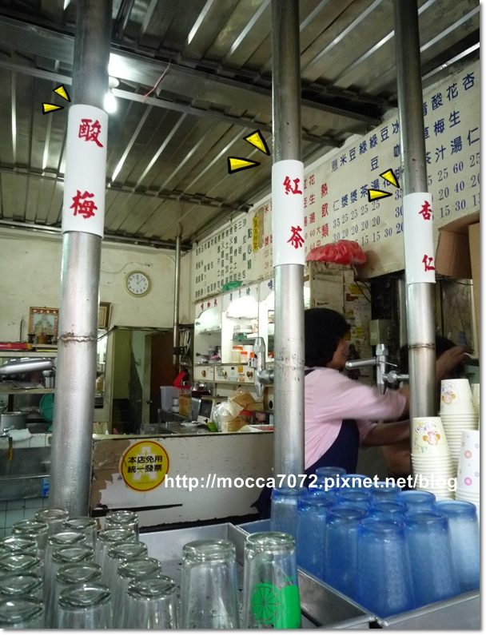
跟卡內家炫紅茶很好喝時，卡內拔說隔天帶我們去喝更好喝的黎明紅茶
這裡沒有管子，當然也沒有廟口的那股特殊味道，比起廟口的這間比較不甜
但兩間喝起來都不會有澀口的感覺

這間的老闆跟老闆娘很親切！保持笑容服務～開心

順便介紹一下這小西點，回台北後居然念念不忘是這玩意，
結帳時看到一位路人甲小姐買很多，順便問了她一下，結果大推我買來吃吃看
兩間都有賣，不過廟口每種口味都貴黎明3塊(黎明：原味$12、草莓$12、咖啡$15)
害我第一天買貴了，但東西明明出自同一工廠.....
其實就像小時候麵包店賣的圓型的西點，但我覺得花蓮的好好吃哦！綿綿的～～糾厚呷！
誰要去？幫我買～～些些
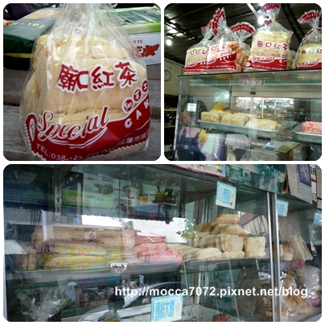
買太多了，老闆的兒子!?都出來幫忙 .gif")
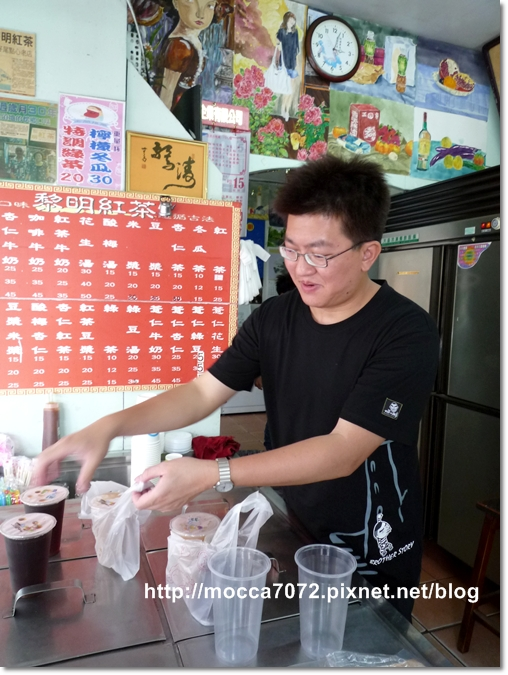
卡內拔退休後來這兒開一間啦！泥好適合哦～一整個很熟練！哈哈哈

雖然廟口強烈的管子味兒深得我心，不過太甜加上小西點比人家貴.gif")
所以下次我會先買黎明。。噗！！那我喜歡有個屁用啊...XD
黎明紅茶
花蓮市南京街185號
廟口紅茶
花蓮市成功街218號
================= 南濱夜市==========
南濱夜市==========
呆丸郎晚上必逛夜市，不管走到那都有夜市的存在
 南濱夜市必吃－林記燒番麥，我喜歡軟一點的口感，但其實應該選Q，硬度比較剛好
南濱夜市必吃－林記燒番麥，我喜歡軟一點的口感，但其實應該選Q，硬度比較剛好
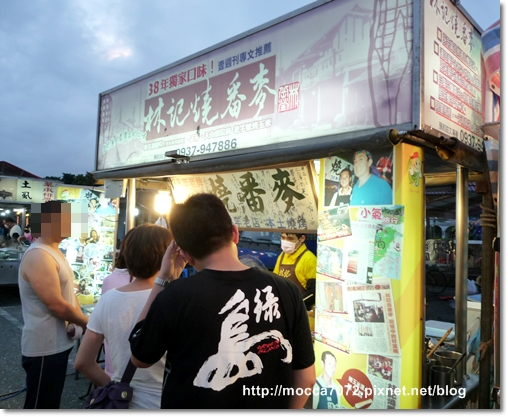
卡內拔請客，因為我們三個在慕谷慕魚被玩到快掛惹！這是犒賞....
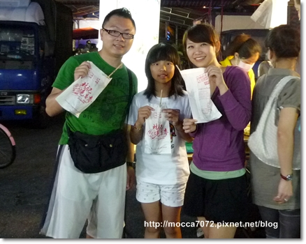
等玉米的同時，殺去旁邊吃臭豆腐，好臭好酥好好吃！

吃飽玩遊戲，三家就可以來個比賽，輸的請吃下一輪食物
男生組比九宮格，忘了誰贏，只記得醬拔輸，請吃海埔蚵仔煎 

女生組比投籃，小姐結有特權，走到最前面根本是用"放"的進球，哈哈哈
我一向狗屎運多，讓我擦板進一球，卡內麻摃龜，請吃楊子萱愛玉
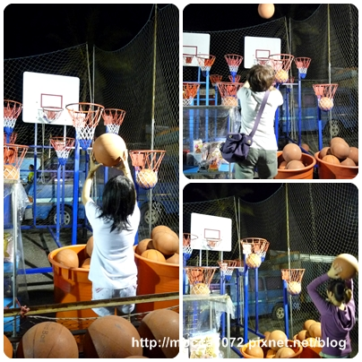
海埔蚵仔煎，每次去人都很多，還好店家動作快，不用排太久就有位子
整體來說很好吃，但皮較厚Q，我吃完蚵仔還剩了一堆皮不吃 
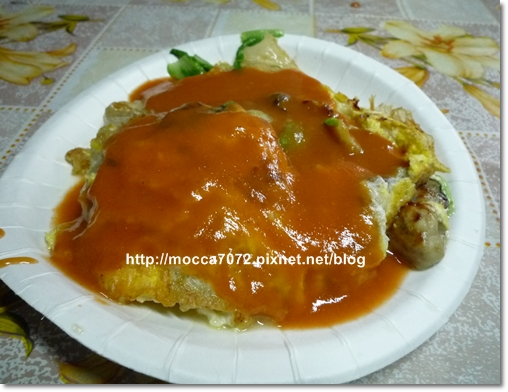

隔壁楊子萱愛玉，忘了拍拿去年的照片擋一下 XD
吃蚵仔煎的人大概都會去隔壁買楊子萱，這兩間真的是互助啊！
檸檬原汁調出的愛玉很清爽好喝！

海埔蚵仔煎
電話：089-865869
地址：花蓮縣花蓮市自由街86號旁
營業時間：17:00~23:00
楊子萱愛玉
電話：03-8323467
地址：花蓮市自由街86號
營業時間：16:00~23:00
＝＝＝＝＝＝＝＝自強夜市==========
把去年難產的孩子也拿出來寫一寫，哈哈哈，以後找資料也方便咩
自強夜市第一家烤肉，打屎我再也不去吃！！ 等超久就算，又焦又苦，亂烤一通！
等超久就算，又焦又苦，亂烤一通！
根本是人多品質就變差，總之那次吃了非常不爽！

蔣家官財板，將厚片吐司沾裹蛋液後油炸，炸得金黃起鍋，
剪開中間一塊麵包當蓋子，再放入料，上次點的是沙爹牛肉，超好吃！
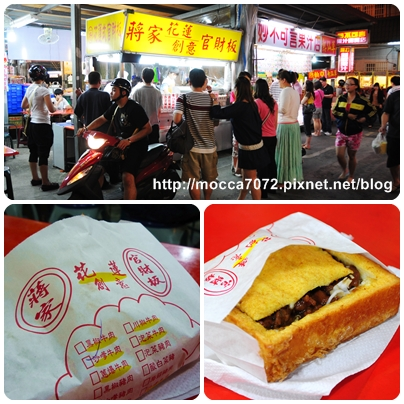
口味非常的多，沒吃過正宗台南官財板，聽說不太一樣！反正熱量破表，肥！

鵝肉先生，花蓮評價頗高的美食之一，今年也沒機會吃到！殘念......
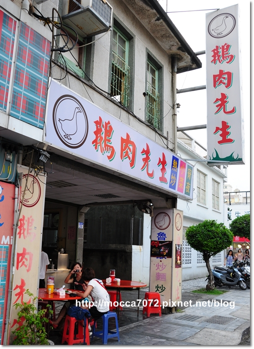
糯米鵝血，脆腸超好吃！
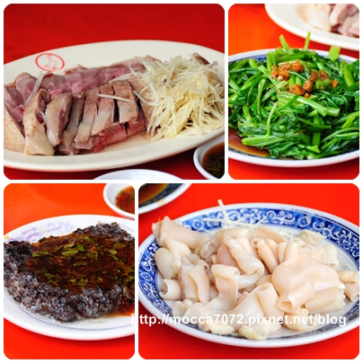
麵的湯頭看起來很清淡，但很鮮美，而且不會很油膩

鵝肉先生
店址：花蓮縣花蓮市中山路259 號
電話：03-8331902
營業時間：11:00-14:30／17:00-02:00
==============
「幹道肉餅」外觀看起來舊舊爛爛的，哈！可是間走復古風的美式餐廳
重點價錢便宜份量又足夠，俗擱大碗！！ 這也是我最愛花蓮美食的前三名

餐前先送上來招待的飛機餅乾，我很愛吃這個古早味小餅兒，附餐飲料也很大杯

炸豬排飯，有三種醬料可選，這是洋蔥蕃茄醬，另外還有咖哩跟奶油蘑菇可選
但我怕膩，通常會選紅醬比較多，超好吃！！

招牌幹道肉餅，超大一顆，女生一個人吃完會很撐

一刀切開，濃濃的起司醬料隨著肉汁流下來，大推！！
猛哥！我這次來怎嘛忘了帶你來吃！！這超合你味的～～下次一定讓你吃到
我想看你咬到肉的機歪臉！！哈哈哈
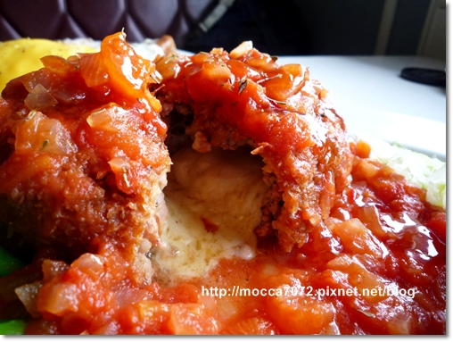
幹道肉餅 (每週一公休)
電話：03-8330282
地址：花蓮市林森路359號
平日 12:00-15:30;17:30-22:00
假日 12:00-15:30;17:30-24 :00
 打完收工，花蓮美食還有好多口袋名單，應該還要再多去幾次才行！ㄎㄎ
打完收工，花蓮美食還有好多口袋名單，應該還要再多去幾次才行！ㄎㄎ